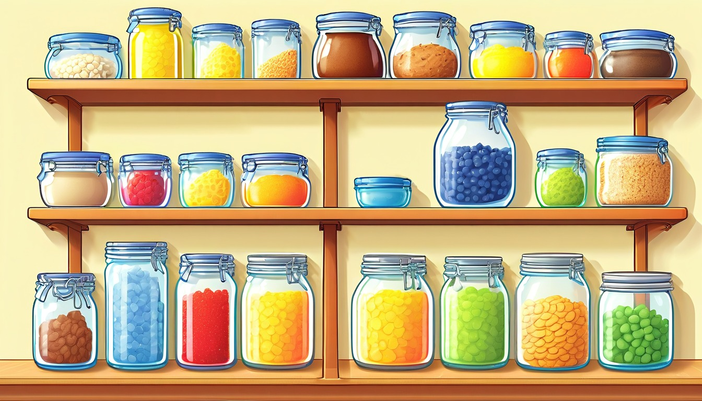

Sixteen lined-paper cards help writers revise one fictional paragraph with a topic sentence, ordered details, a transition check, a closing sentence, one repeated-word cut, and a final copied paragraph.
Audience: Families, homeschool groups, tutors, and adult-led writing tables for writers ages 6-11.
Format: 16 printable paragraph revision cards plus adult guide tools, paragraph revision routines, take-home paragraph revision slips, and optional prompts
Family-safe printable writing pages for adult-led, offline story practice.
$73
Included
16 printable lined paper paragraph revision cards
Adult setup guide
Fictional paragraph revision safety notes
Lined-paper paragraph coaching moves
Family handoff notes
Pack reset notes
Six adult-led paragraph revision routines
Ten take-home paragraph revision slips
Eight optional prompts
Provider-ready PDF and ZIP artifact
Adult guide
Story paragraph-revision coaching
Lined Paper Story Paragraph Revision Adult Guide
Print the lined-paper paragraph revision cards, blank lined sheets, and guide pages before the adult-led paper session.
Begin with one fictional draft paragraph, then coach a topic sentence, useful detail order, transition check, closing sentence, repeated-word cut, and final revised paragraph.
Keep every example made-up, broad, printable, offline, paper-only, and guided by an adult.
Use one lined sheet for the draft and one fresh lined sheet for the revised copy so changes stay easy to see.
Keep details inside the pretend story world; use invented names, simple objects, and broad settings instead of narrow facts.
End each activity by copying one final revised fictional paragraph with a clear topic sentence, ordered details, helpful transitions, and a closing sentence.
Use one lined-paper story paragraph-revision card at a time. Keep every choice broad, invented, paper-only, and screen-free.
World menu
Sixteen paragraph-revision-card worlds
Pick a world image, then revise one fictional paragraph with a pretend lined-paper story paragraph-revision card.
Ages 7-9
Penny Path Compass Shop
Ages 7-9
Sticker Station Mail Cart
Ages 7-8
Mitten Market Lost Ticket
Ages 7-9
Paperclip Plaza Parcel Day
Ages 8-10
Greenhouse Gear Garden

Ages 8-10
Pantry Measurement Mystery
Ages 8-10
Solar Oven Picnic Station
Ages 8-10
Compost Clock Workshop
Ages 8-10
Orchard Pulley Post
Ages 8-10
Pond Bridge Blueprint Club
Ages 8-10
Cloudberry Clocktower
Ages 8-10
Tiny Lantern Reef
Ages 10-11
Almost Invention Workshop
Ages 10-11
Margin Note Market
Ages 10-11
Index Card Theater Club
Ages 10-11
Chapter Gate Greenhouse
Story paragraph-revision routines
Choose the lined-paper paragraph-revision routine
Topic Sentence Anchor
Making the first line tell what the fictional paragraph is mostly about.
The adult points to the first line of the draft paragraph and asks for the main idea: ____________________.
The writer underlines words that belong in the topic sentence: ____________________.
The adult asks which opening line would guide every detail on the lined page: ____________________.
The writer writes the revised topic sentence on the fresh lined sheet: ____________________.
Detail Order Ladder
Putting supporting details in an order that is easier to follow.
The adult writes each fictional detail from the draft on a separate lined-paper strip: ____________________.
The writer numbers the detail that should come first, second, and third: ____________________.
The adult asks which detail feels out of order or should move lower on the page: ____________________.
The writer copies the details in the new order under the topic sentence: ____________________.
Transition Check Track
Adding small bridge words so the details connect on paper.
The adult circles the spaces between detail sentences on the lined draft: ____________________.
The writer chooses a transition word or phrase for the first bridge: ____________________.
The adult asks whether the next bridge shows time, place in the paragraph, or another idea: ____________________.
The writer adds the transition words to the revised detail lines: ____________________.
Closing Sentence Wrap
Finishing the paragraph with one sentence that points back to the main idea.
The adult reads the topic sentence and the ordered details aloud from the lined page: ____________________.
The writer says what the paragraph helped the reader understand about the pretend moment: ____________________.
The adult asks which final sentence can wrap up the same main idea: ____________________.
The writer writes the closing sentence as the last line of the revised paragraph: ____________________.
Repeated Word Cut
Finding one overused word and replacing or removing it for smoother reading.
The adult asks the writer to circle one word that appears too many times in the draft: ____________________.
The writer chooses one repeated word to keep because it is needed: ____________________.
The adult asks which repeated word can change, move, or come out: ____________________.
The writer marks the repeated-word cut on the lined draft before copying: ____________________.
Final Revised Paragraph Copy
Copying the clean paragraph after each revision move is finished.
The adult checks the revision marks in order: topic sentence, details, transitions, closing sentence, word cut: ____________________.
The writer points to the first sentence that will be copied on the fresh lined sheet: ____________________.
The adult asks which sentence needs one last small pencil change before copying: ____________________.
The writer copies the final revised fictional paragraph on fresh lined paper: ____________________.
Take-home paragraph revision slips
Try one revised paragraph later
one lined-paper pass | topic sentence
Topic Sentence Slip
Write a topic sentence that tells what this fictional paragraph is mostly about: ____________________.
Ask which words should guide every detail in the paragraph: ____________________.
three-line pass | detail order
Detail Order Slip
Number three fictional details in the clearest order for the paragraph: ____________________.
Ask why the first detail should come before the next one: ____________________.
bridge-word pass | transition check
Transition Check Slip
Add one transition word or phrase between two detail sentences: ____________________.
Ask how the transition helps the two sentences connect: ____________________.
final-line pass | closing sentence
Closing Sentence Slip
Write a closing sentence that points back to the topic sentence: ____________________.
Ask what the paragraph should leave the reader understanding: ____________________.
circle-and-change pass | repeated-word cut
Repeated Word Slip
Circle one repeated word, then change or remove one extra use of it: ____________________.
Ask which repeated word helped less after it showed up again: ____________________.
fresh-copy pass | final revised paragraph
Final Revised Paragraph Slip
Copy the final revised fictional paragraph on fresh lined paper: ____________________.
Ask which revision made the paragraph easiest to follow: ____________________.
two-detail pass | supporting details
Support Detail Slip
Write two fictional details that both support the same topic sentence: ____________________.
Ask whether both details belong under the same main idea: ____________________.
lineup pass | sentence move
Move One Sentence Slip
Choose one sentence that should move earlier or later in the paragraph: ____________________.
Ask where the sentence fits best on the lined page: ____________________.
quiet pencil pass | extra idea cut
Cut One Extra Idea Slip
Mark one interesting idea that does not fit this paragraph's topic: ____________________.
Ask which idea can wait for a different fictional paragraph: ____________________.
last pencil pass | smooth final copy
Smooth Copy Slip
Make one small pencil change before copying the final revised paragraph: ____________________.
Ask which small change made the paragraph read more smoothly: ____________________.
Optional share prompts
Optional adult-led offline prompt: the topic sentence for this fictional paragraph is ____________________.
Optional adult-led offline prompt: the first useful detail should be ____________________.
Optional adult-led offline prompt: the detail that should move earlier is ____________________.
Optional adult-led offline prompt: the transition word or phrase I will add is ____________________.
Optional adult-led offline prompt: the closing sentence should remind the reader that ____________________.
Optional adult-led offline prompt: the repeated word I will cut or change is ____________________.
Optional adult-led offline prompt: the sentence that needs one small change is ____________________.
Optional adult-led offline prompt: the final revised fictional paragraph is ____________________.
Story Paragraph Revision Card 1 | Ages 7-9 | revise one fictional compass-shop path paragraph by improving the topic sentence, detail order, transition, closing sentence, repeated words, and final copy
Penny Path Compass Shop Paragraph Revision Card
Penny Path Compass Shop
Adult setup: Adult: Set lined paper beside this card and choose one pretend compass-shop path moment before the writer starts: ____________________.
Adult reads: Writer, make one compass-shop path paragraph clearer by changing one part at a time on lined paper: ____________________.
Topic sentence
Adult asks: Write a topic sentence that tells the reader the paragraph is about one compass-shop path: ____________________.
Detail order
Adult asks: Number two details so the penny path clue comes before the button compass choice: ____________________.
Transition check
Adult asks: Add one small transition, such as first or next, so the helper moves from path clue to compass choice: ____________________.
Closing sentence
Adult asks: Write a closing sentence that brings the paragraph back to one clear path choice: ____________________.
Repeated-word cut
Adult asks: Circle one repeated path word, then replace one copy with a fresh paper word: ____________________.
Final revised paragraph
Adult asks: Copy the final revised paragraph neatly on lined paper with the new topic, details, transition, closing, and word change: ____________________.
Quiet option: Adult points to one sentence, and the writer changes only that sentence first: ____________________. Later paper line: Try the same revision steps with a pretend receipt slip or compass card: ____________________.
Story Paragraph Revision Card 2 | Ages 7-9 | revise one fictional mail-cart sticker stop paragraph by improving the topic sentence, detail order, transition, closing sentence, repeated words, and final copy
Sticker Station Mail Cart Paragraph Revision Card
Sticker Station Mail Cart
Adult setup: Adult: Set lined paper beside this card and choose one pretend mail-cart sticker stop moment before the writer starts: ____________________.
Adult reads: Writer, make one mail-cart sticker stop paragraph clearer by changing one part at a time on lined paper: ____________________.
Topic sentence
Adult asks: Write a topic sentence that tells the reader the paragraph is about one mail-cart sticker stop: ____________________.
Detail order
Adult asks: Number two details so the blank note card comes before the sticker cart choice: ____________________.
Transition check
Adult asks: Add one small transition, such as first or next, so the helper moves from note card to cart choice: ____________________.
Closing sentence
Adult asks: Write a closing sentence that brings the paragraph back to the finished sticker stop: ____________________.
Repeated-word cut
Adult asks: Circle one repeated sticker word, then replace one copy with a fresh paper word: ____________________.
Final revised paragraph
Adult asks: Copy the final revised paragraph neatly on lined paper with the new topic, details, transition, closing, and word change: ____________________.
Quiet option: Adult points to one sentence, and the writer changes only that sentence first: ____________________. Later paper line: Try the same revision steps with a pretend note card or cart label paragraph: ____________________.
Story Paragraph Revision Card 3 | Ages 7-8 | revise one fictional lost-ticket market paragraph by improving the topic sentence, detail order, transition, closing sentence, repeated words, and final copy
Mitten Market Lost Ticket Paragraph Revision Card
Mitten Market Lost Ticket
Adult setup: Adult: Set lined paper beside this card and choose one pretend lost-ticket market moment before the writer starts: ____________________.
Adult reads: Writer, make one lost-ticket market paragraph clearer by changing one part at a time on lined paper: ____________________.
Topic sentence
Adult asks: Write a topic sentence that tells the reader the paragraph is about one lost-ticket market: ____________________.
Detail order
Adult asks: Number two details so the yarn-path clue comes before the mitten stall choice: ____________________.
Transition check
Adult asks: Add one small transition, such as first or next, so the helper moves from yarn clue to stall choice: ____________________.
Closing sentence
Adult asks: Write a closing sentence that brings the paragraph back to the ticket search ending: ____________________.
Repeated-word cut
Adult asks: Circle one repeated ticket word, then replace one copy with a fresh paper word: ____________________.
Final revised paragraph
Adult asks: Copy the final revised paragraph neatly on lined paper with the new topic, details, transition, closing, and word change: ____________________.
Quiet option: Adult points to one sentence, and the writer changes only that sentence first: ____________________. Later paper line: Try the same revision steps with a pretend clothespin flag or market ticket paragraph: ____________________.
Story Paragraph Revision Card 4 | Ages 7-9 | revise one fictional parcel-plaza delivery paragraph by improving the topic sentence, detail order, transition, closing sentence, repeated words, and final copy
Paperclip Plaza Parcel Day Paragraph Revision Card
Paperclip Plaza Parcel Day
Adult setup: Adult: Set lined paper beside this card and choose one pretend parcel-plaza delivery moment before the writer starts: ____________________.
Adult reads: Writer, make one parcel-plaza delivery paragraph clearer by changing one part at a time on lined paper: ____________________.
Topic sentence
Adult asks: Write a topic sentence that tells the reader the paragraph is about one parcel-plaza delivery: ____________________.
Detail order
Adult asks: Number two details so the paperclip plaza stop comes before the tiny parcel choice: ____________________.
Transition check
Adult asks: Add one small transition, such as first or next, so the helper moves from plaza stop to parcel choice: ____________________.
Closing sentence
Adult asks: Write a closing sentence that brings the paragraph back to the finished delivery: ____________________.
Repeated-word cut
Adult asks: Circle one repeated parcel word, then replace one copy with a fresh paper word: ____________________.
Final revised paragraph
Adult asks: Copy the final revised paragraph neatly on lined paper with the new topic, details, transition, closing, and word change: ____________________.
Quiet option: Adult points to one sentence, and the writer changes only that sentence first: ____________________. Later paper line: Try the same revision steps with a pretend sticky-note sidewalk or plaza parcel paragraph: ____________________.
Story Paragraph Revision Card 5 | Ages 8-10 | revise one fictional greenhouse gear plan paragraph by improving the topic sentence, detail order, transition, closing sentence, repeated words, and final copy
Greenhouse Gear Garden Paragraph Revision Card
Greenhouse Gear Garden
Adult setup: Adult: Set lined paper beside this card and choose one pretend greenhouse gear plan moment before the writer starts: ____________________.
Adult reads: Writer, make one greenhouse gear plan paragraph clearer by changing one part at a time on lined paper: ____________________.
Topic sentence
Adult asks: Write a topic sentence that tells the reader the paragraph is about one greenhouse gear plan: ____________________.
Detail order
Adult asks: Number two details so the seed tray detail comes before the watering rail detail: ____________________.
Transition check
Adult asks: Add one small transition, such as first or next, so the writer moves from seed tray to watering rail: ____________________.
Closing sentence
Adult asks: Write a closing sentence that brings the paragraph back to the greenhouse gear plan: ____________________.
Repeated-word cut
Adult asks: Circle one repeated gear word, then replace one copy with a fresh paper word: ____________________.
Final revised paragraph
Adult asks: Copy the final revised paragraph neatly on lined paper with the new topic, details, transition, closing, and word change: ____________________.
Quiet option: Adult points to one sentence, and the writer changes only that sentence first: ____________________. Later paper line: Try the same revision steps with a pretend seed tray or vent chart paragraph: ____________________.
Story Paragraph Revision Card 6 | Ages 8-10 | revise one fictional pantry measurement chart paragraph by improving the topic sentence, detail order, transition, closing sentence, repeated words, and final copy
Adult setup: Adult: Set lined paper beside this card and choose one pretend pantry measurement chart moment before the writer starts: ____________________.
Adult reads: Writer, make one pantry measurement chart paragraph clearer by changing one part at a time on lined paper: ____________________.
Topic sentence
Adult asks: Write a topic sentence that tells the reader the paragraph is about one pantry measurement chart: ____________________.
Detail order
Adult asks: Number two details so the measuring spoon note comes before the height chart clue: ____________________.
Transition check
Adult asks: Add one small transition, such as first or next, so the writer moves from spoon note to chart clue: ____________________.
Closing sentence
Adult asks: Write a closing sentence that brings the paragraph back to the measurement chart: ____________________.
Repeated-word cut
Adult asks: Circle one repeated chart word, then replace one copy with a fresh paper word: ____________________.
Final revised paragraph
Adult asks: Copy the final revised paragraph neatly on lined paper with the new topic, details, transition, closing, and word change: ____________________.
Quiet option: Adult points to one sentence, and the writer changes only that sentence first: ____________________. Later paper line: Try the same revision steps with a pretend jar mark or measurement note paragraph: ____________________.
Story Paragraph Revision Card 7 | Ages 8-10 | revise one fictional sun-shadow station chart paragraph by improving the topic sentence, detail order, transition, closing sentence, repeated words, and final copy
Solar Oven Picnic Station Paragraph Revision Card
Solar Oven Picnic Station
Adult setup: Adult: Set lined paper beside this card and choose one pretend sun-shadow station chart moment before the writer starts: ____________________.
Adult reads: Writer, make one sun-shadow station chart paragraph clearer by changing one part at a time on lined paper: ____________________.
Topic sentence
Adult asks: Write a topic sentence that tells the reader the paragraph is about one sun-shadow station chart: ____________________.
Detail order
Adult asks: Number two details so the shadow arrow detail comes before the station notebook detail: ____________________.
Transition check
Adult asks: Add one small transition, such as first or next, so the writer moves from shadow arrow to notebook detail: ____________________.
Closing sentence
Adult asks: Write a closing sentence that brings the paragraph back to the station chart: ____________________.
Repeated-word cut
Adult asks: Circle one repeated sun word, then replace one copy with a fresh paper word: ____________________.
Final revised paragraph
Adult asks: Copy the final revised paragraph neatly on lined paper with the new topic, details, transition, closing, and word change: ____________________.
Quiet option: Adult points to one sentence, and the writer changes only that sentence first: ____________________. Later paper line: Try the same revision steps with a pretend shadow card or station chart paragraph: ____________________.
Story Paragraph Revision Card 8 | Ages 8-10 | revise one fictional compost clockwork plan paragraph by improving the topic sentence, detail order, transition, closing sentence, repeated words, and final copy
Compost Clock Workshop Paragraph Revision Card
Compost Clock Workshop
Adult setup: Adult: Set lined paper beside this card and choose one pretend compost clockwork plan moment before the writer starts: ____________________.
Adult reads: Writer, make one compost clockwork plan paragraph clearer by changing one part at a time on lined paper: ____________________.
Topic sentence
Adult asks: Write a topic sentence that tells the reader the paragraph is about one compost clockwork plan: ____________________.
Detail order
Adult asks: Number two details so the leaf-layer note comes before the hand-crank clock detail: ____________________.
Transition check
Adult asks: Add one small transition, such as first or next, so the writer moves from leaf note to clock detail: ____________________.
Closing sentence
Adult asks: Write a closing sentence that brings the paragraph back to the compost clockwork plan: ____________________.
Repeated-word cut
Adult asks: Circle one repeated clock word, then replace one copy with a fresh paper word: ____________________.
Final revised paragraph
Adult asks: Copy the final revised paragraph neatly on lined paper with the new topic, details, transition, closing, and word change: ____________________.
Quiet option: Adult points to one sentence, and the writer changes only that sentence first: ____________________. Later paper line: Try the same revision steps with a pretend leaf calendar or clockwork note paragraph: ____________________.
Story Paragraph Revision Card 9 | Ages 8-10 | revise one fictional orchard pulley post paragraph by improving the topic sentence, detail order, transition, closing sentence, repeated words, and final copy
Orchard Pulley Post Paragraph Revision Card
Orchard Pulley Post
Adult setup: Adult: Set lined paper beside this card and choose one pretend orchard pulley post moment before the writer starts: ____________________.
Adult reads: Writer, make one orchard pulley post paragraph clearer by changing one part at a time on lined paper: ____________________.
Topic sentence
Adult asks: Write a topic sentence that tells the reader the paragraph is about one orchard pulley post: ____________________.
Detail order
Adult asks: Number two details so the apple basket detail comes before the rope scale choice: ____________________.
Transition check
Adult asks: Add one small transition, such as first or next, so the writer moves from basket detail to scale choice: ____________________.
Closing sentence
Adult asks: Write a closing sentence that brings the paragraph back to the pulley post plan: ____________________.
Repeated-word cut
Adult asks: Circle one repeated basket word, then replace one copy with a fresh paper word: ____________________.
Final revised paragraph
Adult asks: Copy the final revised paragraph neatly on lined paper with the new topic, details, transition, closing, and word change: ____________________.
Quiet option: Adult points to one sentence, and the writer changes only that sentence first: ____________________. Later paper line: Try the same revision steps with a pretend pulley note or orchard tally paragraph: ____________________.
Story Paragraph Revision Card 10 | Ages 8-10 | revise one fictional pond bridge blueprint paragraph by improving the topic sentence, detail order, transition, closing sentence, repeated words, and final copy
Pond Bridge Blueprint Club Paragraph Revision Card
Pond Bridge Blueprint Club
Adult setup: Adult: Set lined paper beside this card and choose one pretend pond bridge blueprint moment before the writer starts: ____________________.
Adult reads: Writer, make one pond bridge blueprint paragraph clearer by changing one part at a time on lined paper: ____________________.
Topic sentence
Adult asks: Write a topic sentence that tells the reader the paragraph is about one pond bridge blueprint: ____________________.
Detail order
Adult asks: Number two details so the bridge model detail comes before the pebble test note: ____________________.
Transition check
Adult asks: Add one small transition, such as first or next, so the writer moves from bridge model to test note: ____________________.
Closing sentence
Adult asks: Write a closing sentence that brings the paragraph back to the blueprint choice: ____________________.
Repeated-word cut
Adult asks: Circle one repeated bridge word, then replace one copy with a fresh paper word: ____________________.
Final revised paragraph
Adult asks: Copy the final revised paragraph neatly on lined paper with the new topic, details, transition, closing, and word change: ____________________.
Quiet option: Adult points to one sentence, and the writer changes only that sentence first: ____________________. Later paper line: Try the same revision steps with a pretend waterproof board or leaf boat paragraph: ____________________.
Story Paragraph Revision Card 11 | Ages 8-10 | revise one fictional clocktower berry clue paragraph by improving the topic sentence, detail order, transition, closing sentence, repeated words, and final copy
Cloudberry Clocktower Paragraph Revision Card
Cloudberry Clocktower
Adult setup: Adult: Set lined paper beside this card and choose one pretend clocktower berry clue moment before the writer starts: ____________________.
Adult reads: Writer, make one clocktower berry clue paragraph clearer by changing one part at a time on lined paper: ____________________.
Topic sentence
Adult asks: Write a topic sentence that tells the reader the paragraph is about one clocktower berry clue: ____________________.
Detail order
Adult asks: Number two details so the clocktower clue comes before the breakfast-hour notice: ____________________.
Transition check
Adult asks: Add one small transition, such as first or next, so the writer moves from clocktower clue to notice detail: ____________________.
Closing sentence
Adult asks: Write a closing sentence that brings the paragraph back to the berry clue: ____________________.
Repeated-word cut
Adult asks: Circle one repeated clock word, then replace one copy with a fresh paper word: ____________________.
Final revised paragraph
Adult asks: Copy the final revised paragraph neatly on lined paper with the new topic, details, transition, closing, and word change: ____________________.
Quiet option: Adult points to one sentence, and the writer changes only that sentence first: ____________________. Later paper line: Try the same revision steps with a pretend berry vine or missing-hour paragraph: ____________________.
Story Paragraph Revision Card 12 | Ages 8-10 | revise one fictional lantern reef path paragraph by improving the topic sentence, detail order, transition, closing sentence, repeated words, and final copy
Tiny Lantern Reef Paragraph Revision Card
Tiny Lantern Reef
Adult setup: Adult: Set lined paper beside this card and choose one pretend lantern reef path moment before the writer starts: ____________________.
Adult reads: Writer, make one lantern reef path paragraph clearer by changing one part at a time on lined paper: ____________________.
Topic sentence
Adult asks: Write a topic sentence that tells the reader the paragraph is about one lantern reef path: ____________________.
Detail order
Adult asks: Number two details so the paper boat detail comes before the button-coral clue: ____________________.
Transition check
Adult asks: Add one small transition, such as first or next, so the writer moves from paper boat to reef clue: ____________________.
Closing sentence
Adult asks: Write a closing sentence that brings the paragraph back to the lantern path: ____________________.
Repeated-word cut
Adult asks: Circle one repeated lantern word, then replace one copy with a fresh paper word: ____________________.
Final revised paragraph
Adult asks: Copy the final revised paragraph neatly on lined paper with the new topic, details, transition, closing, and word change: ____________________.
Quiet option: Adult points to one sentence, and the writer changes only that sentence first: ____________________. Later paper line: Try the same revision steps with a pretend sea-glass path or paper boat paragraph: ____________________.
Story Paragraph Revision Card 13 | Ages 10-11 | revise one fictional paper prototype test paragraph by improving the topic sentence, detail order, transition, closing sentence, repeated words, and final copy
Almost Invention Workshop Paragraph Revision Card
Almost Invention Workshop
Adult setup: Adult: Set lined paper beside this card and choose one pretend paper prototype test moment before the writer starts: ____________________.
Adult reads: Writer, make one paper prototype test paragraph clearer by changing one part at a time on lined paper: ____________________.
Topic sentence
Adult asks: Write a topic sentence that tells the reader the paragraph is about one paper prototype test: ____________________.
Detail order
Adult asks: Number two details so the cardboard gear detail comes before the testing chart detail: ____________________.
Transition check
Adult asks: Add one small transition, such as first or next, so the writer moves from gear detail to chart detail: ____________________.
Closing sentence
Adult asks: Write a closing sentence that brings the paragraph back to the prototype test result: ____________________.
Repeated-word cut
Adult asks: Circle one repeated test word, then replace one copy with a fresh paper word: ____________________.
Final revised paragraph
Adult asks: Copy the final revised paragraph neatly on lined paper with the new topic, details, transition, closing, and word change: ____________________.
Quiet option: Adult points to one sentence, and the writer changes only that sentence first: ____________________. Later paper line: Try the same revision steps with a pretend prototype note or blank chart paragraph: ____________________.
Story Paragraph Revision Card 14 | Ages 10-11 | revise one fictional margin-note feedback trade paragraph by improving the topic sentence, detail order, transition, closing sentence, repeated words, and final copy
Margin Note Market Paragraph Revision Card
Margin Note Market
Adult setup: Adult: Set lined paper beside this card and choose one pretend margin-note feedback trade moment before the writer starts: ____________________.
Adult reads: Writer, make one margin-note feedback trade paragraph clearer by changing one part at a time on lined paper: ____________________.
Topic sentence
Adult asks: Write a topic sentence that tells the reader the paragraph is about one margin-note feedback trade: ____________________.
Detail order
Adult asks: Number two details so the feedback stall detail comes before the note-card trade: ____________________.
Transition check
Adult asks: Add one small transition, such as first or next, so the writer moves from stall detail to trade detail: ____________________.
Closing sentence
Adult asks: Write a closing sentence that brings the paragraph back to the feedback choice: ____________________.
Repeated-word cut
Adult asks: Circle one repeated note word, then replace one copy with a fresh paper word: ____________________.
Final revised paragraph
Adult asks: Copy the final revised paragraph neatly on lined paper with the new topic, details, transition, closing, and word change: ____________________.
Quiet option: Adult points to one sentence, and the writer changes only that sentence first: ____________________. Later paper line: Try the same revision steps with a pretend feedback slip or market stall paragraph: ____________________.
Story Paragraph Revision Card 15 | Ages 10-11 | revise one fictional index-card scene plan paragraph by improving the topic sentence, detail order, transition, closing sentence, repeated words, and final copy
Index Card Theater Club Paragraph Revision Card
Index Card Theater Club
Adult setup: Adult: Set lined paper beside this card and choose one pretend index-card scene plan moment before the writer starts: ____________________.
Adult reads: Writer, make one index-card scene plan paragraph clearer by changing one part at a time on lined paper: ____________________.
Topic sentence
Adult asks: Write a topic sentence that tells the reader the paragraph is about one index-card scene plan: ____________________.
Detail order
Adult asks: Number two details so the scene card detail comes before the quiet prop-table choice: ____________________.
Transition check
Adult asks: Add one small transition, such as first or next, so the writer moves from scene card to prop-table choice: ____________________.
Closing sentence
Adult asks: Write a closing sentence that brings the paragraph back to the theater scene plan: ____________________.
Repeated-word cut
Adult asks: Circle one repeated scene word, then replace one copy with a fresh paper word: ____________________.
Final revised paragraph
Adult asks: Copy the final revised paragraph neatly on lined paper with the new topic, details, transition, closing, and word change: ____________________.
Quiet option: Adult points to one sentence, and the writer changes only that sentence first: ____________________. Later paper line: Try the same revision steps with a pretend blank cue card or prop-table paragraph: ____________________.
Story Paragraph Revision Card 16 | Ages 10-11 | revise one fictional chapter-gate greenhouse note paragraph by improving the topic sentence, detail order, transition, closing sentence, repeated words, and final copy
Chapter Gate Greenhouse Paragraph Revision Card
Chapter Gate Greenhouse
Adult setup: Adult: Set lined paper beside this card and choose one pretend chapter-gate greenhouse note moment before the writer starts: ____________________.
Adult reads: Writer, make one chapter-gate greenhouse note paragraph clearer by changing one part at a time on lined paper: ____________________.
Topic sentence
Adult asks: Write a topic sentence that tells the reader the paragraph is about one chapter-gate greenhouse note: ____________________.
Detail order
Adult asks: Number two details so the paper plant detail comes before the transition gate choice: ____________________.
Transition check
Adult asks: Add one small transition, such as first or next, so the writer moves from plant detail to gate choice: ____________________.
Closing sentence
Adult asks: Write a closing sentence that brings the paragraph back to the chapter-gate note: ____________________.
Repeated-word cut
Adult asks: Circle one repeated chapter word, then replace one copy with a fresh paper word: ____________________.
Final revised paragraph
Adult asks: Copy the final revised paragraph neatly on lined paper with the new topic, details, transition, closing, and word change: ____________________.
Quiet option: Adult points to one sentence, and the writer changes only that sentence first: ____________________. Later paper line: Try the same revision steps with a pretend paper plant or transition gate paragraph: ____________________.